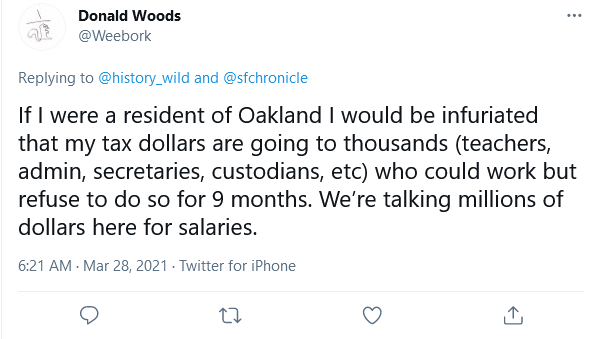
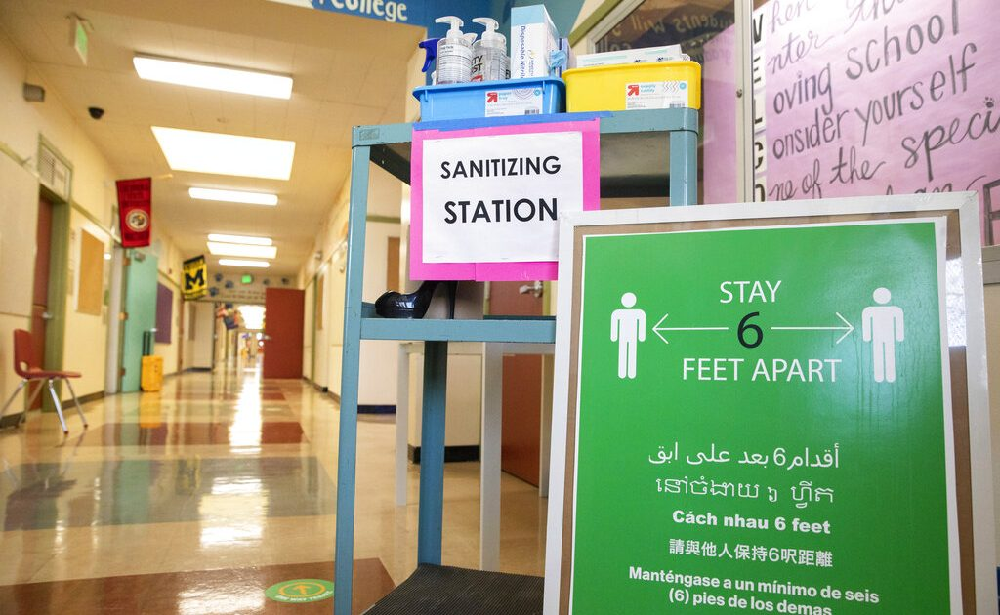
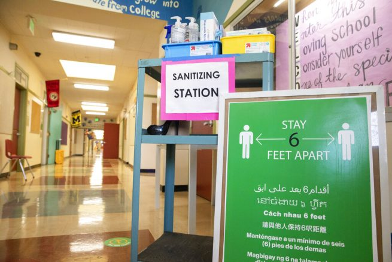

More than half of Oakland elementary schools remain closed as teachers’ union members refuse to work

OAN Newsroom
A teachers’ union has blocked schools in a California school district from reopening.At least half of the teachers in the Oakland Education Association are refusing to reenter the classroom despite making a deal with the district to open schools on Tuesday.
Over the weekend, parents voiced their frustration.They said no one seems to know if schools will even fully reopen this fall.
'That’s the biggest source of concern for parents right now, is that we don’t actually know what fall is going to look like,' explained Andrea Dooley, President of the Oakland Technical High School PTA.'Everyone is confused and concerned…and there’s not anonymity about what it should be like, there’s just confusion about what is being proposed.'
.@OUSDNews prepares to reopen schools for in-person learning next Tuesday.I took a tour of Garfield Elementary School in Oakland today to see what COVID safety measures are in place what students can expect when they return to the classroom.@KCBSRadio pic.twitter.com/DWCOjb6mvm — Carrie Hodousek (@CarrieHodousek) March 25, 2021
Only 21 of the district’s 50 pre-K and elementary schools covered by the union deal are returning to hybrid instruction this week and high schools will stay closed through spring.
Posted On: 2021-03-31T00:00:00


Content Date: 2021-03-31
Download Date: 2021-04-16
Document ID: L0C04A1MS